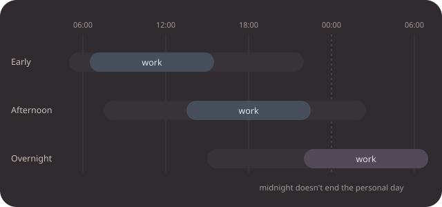
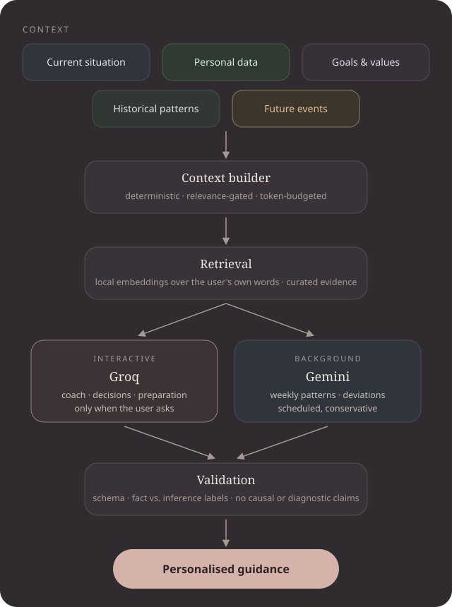
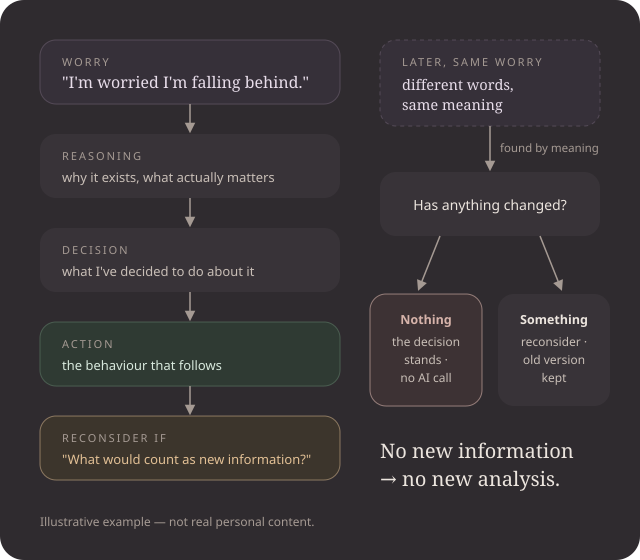
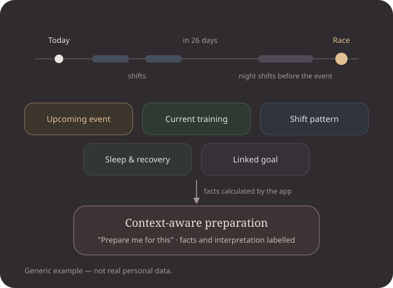
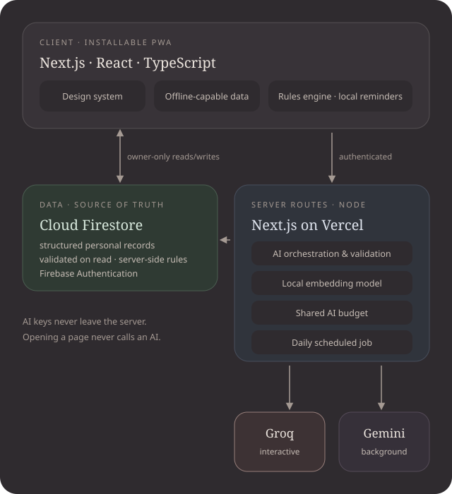

Structure without rigidity
Every habit has a minimum, target and stretch. The minimum counts fully. Hard days lower the bar automatically, with a stated reason.
Case study · Product design · Product engineering · AI systems
A personal operating system that helps you become more capable without losing sight of the life you're becoming capable for.
A calm, mobile-first web app for a life on rotating shifts. It plans each day around the real shift and the real sleep, keeps everything as structured data, and brings in AI only when context makes it genuinely useful.
01 · The idea
Habitty started as a way to track six habits. It quickly ran into a real constraint: rotating shifts. An early week, an afternoon week, an overnight week, with transition days in between. Streaks punished exactly the days when protecting sleep mattered most, and "today" at 2 a.m. was still the evening before.
Tracking answers only what happened. The questions that matter during a day are different, so the product grew into a system that understands where you are, what has happened, what is changing, where you're going, what is coming, and what you have already decided.

02 · Product model
Every screen answers one question. Anything that couldn't attach to one of them was folded in or left out.
Around them: Values, the Decision Tree, a week in review, personal reports, a meditation timer and a shift planner.
03 · Design philosophy
Every habit has a minimum, target and stretch. The minimum counts fully. Hard days lower the bar automatically, with a stated reason.
Today leads with one sentence for right now and a few next steps. Logging is one tap away, but direction comes first.
No streaks to protect. Consistency is measured over weeks, and missing a workout after a night shift isn't failure.
Sleep, meals, training, tasks, goals, decisions and events are connected through one context builder.
Shift resolution, timing rules, relevance gating and rate limiting are invisible. The page stays calm.
Emotions are words, not numbers. Progress shows change, never a grade.
A calm evening room: one warm dark theme, Newsreader for the editorial voice, Geist for the interface, colours only from design tokens.
04 · AI architecture

The coach, Decision Tree interpretation, "Prepare me for this", the week in review and report reflections. Each runs only when the user asks, and is tuned for latency.
A weekly pattern reading and obvious deviations from the user's own baseline. At most one request per scheduled run, never repeated on unchanged data, and never retried on the interactive provider.
"Should I exercise now?" gets the current situation only. "Why do I keep worrying about my career?" also gets related past words and how often the concern came up. A race appears only in questions it actually affects.
Typed task contracts, schema validation and deterministic fallbacks. Every claim is labelled as fact, derived, observation, pattern, possible association or inference. Causal and diagnostic claims are rejected in code.
A small embedding model runs on the server, so the user's own words can be retrieved by meaning without an external embedding API. Every semantic path has a timeout and a word-based fallback.
Opening any page makes zero AI requests. Averages, trends, plans, reminders, time zones and conflicts are code.
05 · Decision Tree
Many worries aren't new. They come back and get argued from scratch every time. The Decision Tree records a worry together with what you decided, and what would count as new information.
Capturing one takes two inputs: What am I worried about? and What am I going to do about it? The model infers the rest and shows it back as "Here's how I understood this", with your words kept separate from its inferences. Every field can be corrected.
When the same worry returns in different words, it's found by meaning. If nothing has changed, the decision stands and no AI call is made.
Linking is deliberately conservative: at most one value and one goal, only with evidence quoted from your own words, and only if the action directly serves the goal. A wrong relationship is worse than none.

06 · Snapshot & Progress
No duplicate logging: Snapshot reuses what Today already recorded, and a metric can belong to several areas without being stored twice. Unrecorded days are unknown, never "no". There are no productivity scores.
07 · Future context

A race in four weeks changes how to train this week. An early event tomorrow changes whether to stay up tonight. The calendar exists for this, not to be another calendar app, so it lives behind Today's date rather than in the navigation.
Events are plain structured data: timed or all-day, with their own time zone, a muted colour, a type, an importance level and an optional goal. Conflicts with other events, work shifts (including last night's) and tasks are calculated, never guessed. Reminders are deterministic.
"Prepare me for this" is one interactive request. The app supplies the event, the time until it, the shifts before it, recent training and sleep, and the linked goal. The model interprets these facts and labels what it says. Nothing is written back into the event.
08 · Engineering
Frontend
Strict types across a large domain model; one codebase for UI and server routes.
Design
Every colour is a token, so the calm palette stays consistent across UI, charts and event colours.
Visualisation
Restrained trend and comparison charts, each with a table view and an explicit "not enough data yet" state.
Database
Structured personal data with server-enforced access control, offline support, and a natural fit for an evolving data model.
Authentication
Google sign-in, restricted to one verified owner. A private tool should behave like one.
Validation
One schema language for stored documents, forms and AI output. Anything that crosses a boundary is checked.
Interactive AI
Fast inference for answers the user is waiting on.
Background AI
Room for broad context in scheduled analysis, with its own quota, separate from interactive capacity.
Semantic retrieval
A small, quantised embedding model on the server. No external embedding API, with graceful fallbacks.
Deployment
Server routes for AI and a daily scheduled job; installable on a phone, with local reminders.
Testing
Shift and time-zone logic, AI contracts and fallbacks, privacy, rate limiting under concurrency, and "no AI here" guarantees.

09 · Engineering decisions
10 · Challenges & trade-offs
Built analysis engines, then switched most of them off.
Send what's relevant, not what's available.
Anything that must be right is code; model output is validated.
Every feature had to fit an existing question.
Many days the scheduled job makes no AI call, by design.
Known limits: embedding cold starts take seconds; a burst of AI requests may have to wait for the provider's limits; reminders need the app open; calendar events don't recur yet; single-user by design.
11 · What I learned
Every screen answers one question. The product improved as it got simpler.
The value isn't any single number but the combination: shift, personal day, sleep, what's due, what's coming.
Counting, scheduling and time zones are code problems. AI earns its place in interpretation and language.
Keeping facts and model output in different layers, labelled and traceable, makes both safer.
Plans that lower the bar on hard days. Context that matches the question. Budgets that reserve and settle.
Success was measured by how little the user has to think.
I designed and built it end to end: the product model, the visual language, the shift-aware planning engine, the data model, the AI architecture and its safeguards, and the tests that keep it honest. It is intelligent where intelligence helps, deterministic where correctness matters, and quiet everywhere else.